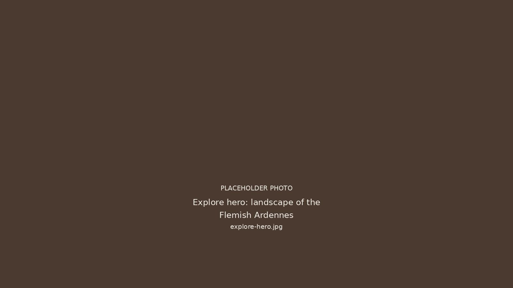
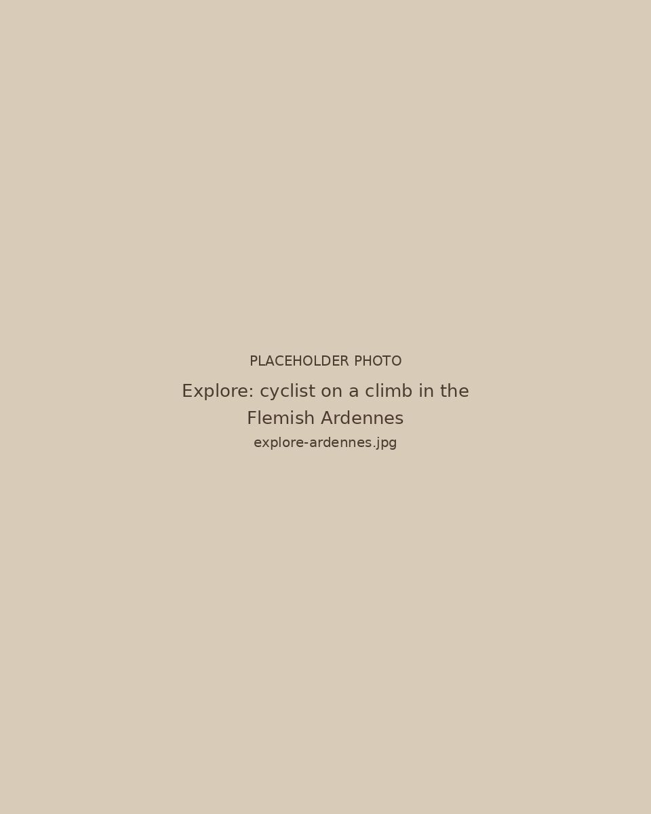
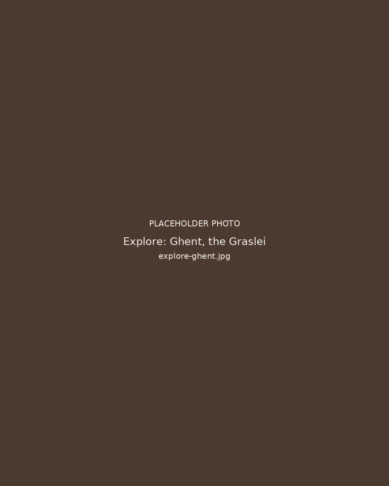

OmgevingExplore

De Vlaamse Ardennen aan de deurThe Flemish Ardennes at the door
De Vlaamse Ardennen beginnen aan de voordeur. Glooiende heuvels, rustige wegen en bekende hellingen maken dit een van de mooiste fietsstreken van het land. Wandelaars en gravelrijders vinden hier makkelijk hun weg. Huur een fiets of neem je eigen mee. Aan de fietsenberging kun je fietsen reinigen met de Karcher en elektrische fietsen buiten opladen.
The Flemish Ardennes start at the front door. Rolling hills, quiet roads and well known climbs make this one of the finest cycling regions in the country. Walkers and gravel riders find their way here just as easily. Rent a bike or bring your own. At the bike store you can clean your bike with the Karcher and charge e-bikes outside.

Gent op 20 minutenGhent twenty minutes away
Wil je de stad in, dan ligt Gent op 20 minuten met de wagen. Middeleeuwse straten, musea, restaurants en een levendig centrum, allemaal vlakbij. Breng er de namiddag door en keer 's avonds terug naar de rust van het dorp.
When you want the city, Ghent is twenty minutes away by car. Medieval streets, museums, restaurants and a lively centre, all close by. Spend the afternoon there and return in the evening to the quiet of the village.
Klaar voor een weekend in het dorp?Ready for a weekend in the village?
Bekijk de beschikbaarheid en stuur je aanvraag.
Check availability and send your request.